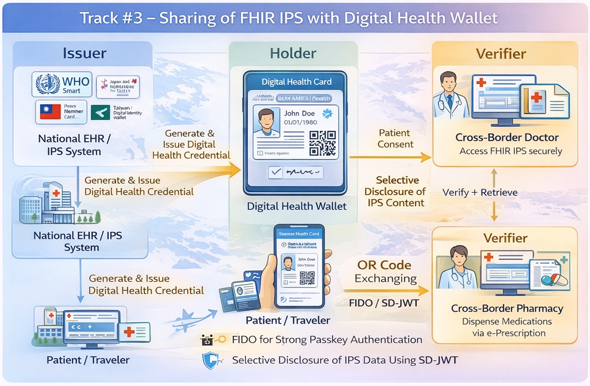

Asia-Pacific Patient Summary
0.1.0 - ci-build
035
Asia-Pacific Patient Summary - Local Development build (v0.1.0) built by the FHIR (HL7® FHIR® Standard) Build Tools. See the Directory of published versions
This profile enables patient-mediated exchange of FHIR IPS integrated with digital signatures, verifiable credentials, and digital health wallet technologies. The FHIR IPS document is packaged as a cryptographically verifiable and portable credential, allowing patients to securely carry, present, and share their health summaries across borders and healthcare systems.
| Actor | Transaction | Optionality | Reference |
|---|---|---|---|
| IPS Issuer | Issue IPS Credential [IPS-W1] | R | Section 3.W1 |
| IPS Issuer | Bind Patient Identity [IPS-W4] | O | Section 3.W4 |
| Health Wallet | Issue IPS Credential [IPS-W1] | R | Section 3.W1 |
| Health Wallet | Present IPS Credential [IPS-W2] | R | Section 3.W2 |
| IPS Verifier | Present IPS Credential [IPS-W2] | R | Section 3.W2 |
| IPS Verifier | Verify IPS Credential [IPS-W3] | R | Section 3.W3 |
| IPS-DHW Actor | Actor to be grouped with | Reference |
|---|---|---|
| IPS Issuer | IPS Creator (IPSE Profile) | Profile #2 |
| IPS Issuer | ATNA / Secure Node | ITI TF-1: ATNA |
| IPS Verifier | CT / Time Client | ITI TF-1: Consistent Time |
FHIR IPS data is exchanged using QR codes or secure digital channels, with access strictly governed by explicit patient consent. Selective Disclosure JWT (SD-JWT) enables privacy-preserving partial disclosure of IPS sections.
The IPS-DHW Profile requires the IPSE Profile (Profile #2) for IPS content creation and structure, and aligns with standards such as WHO Smart Health Cards and W3C Verifiable Credentials for cross-ecosystem interoperability.
